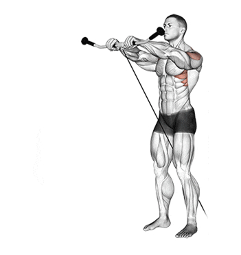
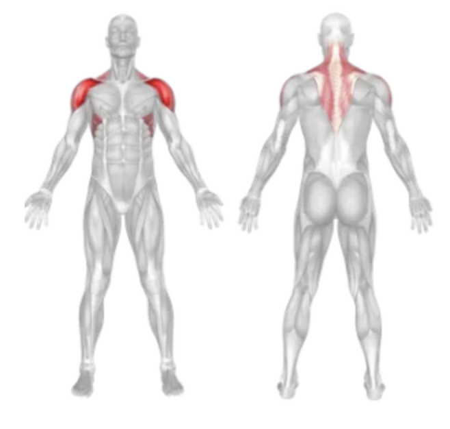
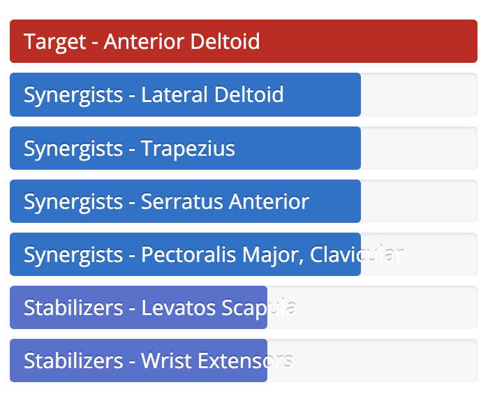

Cable Front Raise
Setup
Attach a single handle to the lowest setting of a cable machine.
Stand facing away from the machine, with the cable between your legs.
Grab the handle with an overhand grip using one hand.
Stand tall with a slight bend in your knees and your core engaged.
Position your working arm in front of your thigh, elbow slightly bent.

Execution
Raise:
Exhale and lift the handle in front of you to shoulder height, keeping your arm straight.
Pause:
Briefly hold the top position and squeeze the front deltoid.
Lower:
Inhale as you slowly lower the handle back to the starting position with control.
Repeat:
Perform the desired number of reps before switching sides.
Tips for Effectiveness
Controlled Movement:
Avoid using momentum or swinging the weight.
Neutral Wrist:
Keep your wrist straight to reduce strain.
Shoulder Isolation:
Focus on lifting with the deltoid, not your traps or arms.
Core Tight:
Engage your abs to prevent lower back strain.
Benefits of Cable Front Raise
Front Deltoid Activation:
Specifically targets the anterior delts for shoulder development.
Constant Tension:
Cable provides consistent resistance throughout the movement.
Improved Aesthetics:
Enhances shoulder roundness and upper body definition.
Better Control:
Smooth cable resistance helps with controlled, safe reps.
Muscles Worked in Cable Front Raise


Do you want to change the language of this page?
English
Malayalam
Tamil
Hindi